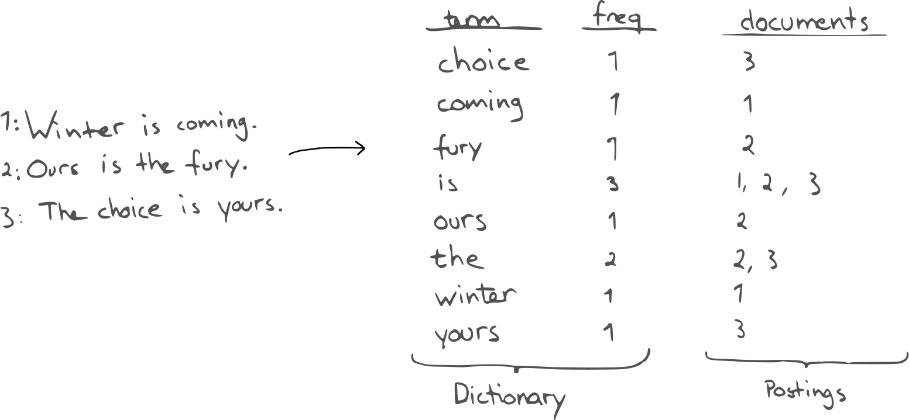

Piotr Leniec
Background
- Created by Shay Banon
- Released Compass in 2004
- The first version released in February 2010
- Elasticsearch BV company founded in 2012
- The company raised $70 million in 2014
What is Elasticsearch
- Distributed and Highly Available Search Engine
- Various set of APIs
- Document oriented
- Built on top of Lucene
- Open Source
Analogy with relational databases
Elasticsearch Index = SQL Database
Not really...
curl -XPUT 'localhost:9200/content' -H 'Content-Type: application/json' -d'
{
"mappings": {
"article": {
"title": { "type": "text" },
"content": { "type": "text" },
"number_of_comments": { "type": "integer" }
},
"comment": {
"username": { "type": "keyword" },
"content": { "type": "text" }
}
}
'
curl -XDELETE 'localhost:9200/content'
Elasticsearch Type = SQL Table
Not really...
curl -XPUT 'localhost:9200/content/_mapping/user' -H 'Content-Type: application/json' -d'
{
"properties": {
"name": { "type": "keyword" }
"content": { "type": "text" }
}
}
'
The analogy is used only to explain basics!!!
Elasticsearch is not an SQL!!!
CRUD
curl -XPUT 'localhost:9200/talks/talk/1' -H 'Content-Type: application/json' -d'
{
"title" : "Practical Introduction to Elasticsearch",
"body": "Bla bla bla...",
"author": "Piotr Leniec"
}
'
curl -XGET 'localhost:9200/talks/talk/1'
curl -XDELETE 'localhost:9200/talks/talk/1'
Inverted Index
Analyzers
Analysis is the process of converting text, like the body of any email, into tokens or terms which are added to the inverted index for searching.Character Filters
A character filter receives the original text as a stream of characters and can transform the stream by adding, removing, or changing characters.HTML Strip Character Filter
Hello!
My name is John.
Hello! My name is John.
Pattern Replace Character Filter
My email address is leniec.piotr@gmail.com
My Email address is [email hidden]
Tokenizers
A tokenizer receives a stream of characters, breaks it up into individual tokens (usually individual words), and outputs a stream of tokens.Whitespace Tokenizer
The 2 QUICK Brown-Foxes jumped over the dog's bone.
[ The, 2, QUICK, Brown-Foxes, jumped, over, the, dog's, bone. ]
Letter Tokenizer
The 2 QUICK Brown-Foxes jumped over the dog's bone.
[ The, QUICK, Brown, Foxes, jumped, over, the, dog, s, bone ]
Edge N-Gram Tokenizer
2 Quick Foxes.
[ Qu, Qui, Quic, Quick, Fo, Fox, Foxe, Foxes ]
Token Filters
Token filters accept a stream of tokens from a tokenizer and can modify tokens (eg lowercasing), delete tokens (eg remove stopwords) or add tokens (eg synonyms).Length Token Filter
[ The, QUICK, Brown, Foxes, jumped, over, the, dog, s, bone ]
[ QUICK, Brown, Foxes, jumped, over, bone ]
Lowercase Token Filter
[ The, QUICK, Brown, Foxes, jumped, over, the, dog, s, bone ]
[ the, quick, brown, foxes, jumped, over, the, dog, s, bone ]
curl -XGET 'localhost:9200/_analyze' -H 'Content-Type: application/json' -d'
{
"analyzer": "standard",
"text": "this IS a test"
}
'
[ this, is, a, test ]
curl -XGET 'localhost:9200/_analyze' -H 'Content-Type: application/json' -d'
{
"char_filter": ["html_strip"],
"tokenizer": "keyword",
"filter": ["lowercase"],
"text": "this IS a test"
}
'
[ this is a test ]
Query DSL
curl -XGET 'localhost:9200/talks/_search' -H 'Content-Type: application/json' -d'
{
"query": {
"match" : {
"body" : "this is a test"
}
}
}
'
curl -XGET 'localhost:9200/talks/talk/_search' -H 'Content-Type: application/json' -d'
{
"query": {
"match" : {
"body" : "this is a test"
}
}
}
'
curl -XGET 'localhost:9200/talks/talk/_search' -H 'Content-Type: application/json' -d'
{
"query": {
"term" : {
"body" : "this is a test"
}
}
}
'
Score, filters and other funny things
Gems
elasticsearch-rails
- 2,101 stars on GitHub
- Maintained by Elastic
- Covers whole elasticsearch API
searchkick
- 3,954 stars on GitHub
chewy
- 1,185 stars on GitHub
- Maintained by Toptal
- Separates rails models from elasticsearch index